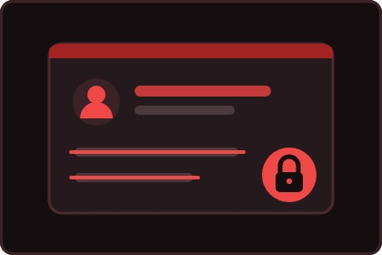

01 De qué se trata
La mayoría de los problemas que se ven en Internet no empiezan con un hacker genial: empiezan con una clave floja, con un dato publicado sin pensar o con un rastro que quedó guardado años. Nada de eso necesita conocimientos técnicos para arreglarse.
Esta guía está armada en tres frentes: tus claves, tus datos y tu huella digital. Al final hay una tabla con el nivel de riesgo de acciones que hacemos todos los días y una lista de dónde pedir ayuda.

02 Consejos para tus contraseñas
Piensa en una frase que solo tenga sentido para ti y escríbela completa. Es más fácil de recordar que un código corto lleno de símbolos y muchísimo más difícil de adivinar, porque los programas que las revientan prueban palabras sueltas.
miguel2008 → ElTecladoNegroUsaTresCables
Guarda una clave distinta para el correo. Esa es la llave maestra: desde ahí se recuperan todas las demás cuentas, así que si cae el correo, caen todas.
Y activa la verificación en dos pasos donde te la ofrezcan. Es un código que llega a tu teléfono cada vez que alguien intenta entrar. Aunque descubran tu clave, sin ese código no pasan de la pantalla de inicio.
Se la conoce como 2FA y se activa en la configuración de seguridad de cada aplicación.
03 Qué datos no se comparten
Hay información que parece inofensiva y que junta con otra arma un perfil completo tuyo: tu dirección, el nombre del liceo, tu horario de salida, la patente del auto familiar, el número de teléfono o una foto de tu carné. Nada de eso va en una publicación abierta ni se le manda a alguien que conociste por pantalla.

Buenas prácticas del día a día
- Revisa quién puede ver tus publicaciones e historias.
- No aceptes solicitudes de cuentas que no tienen amigos en común contigo.
- Descarga aplicaciones únicamente desde Google Play o la App Store.
- Mantén el teléfono y las apps actualizados.
- Ponle huella, patrón o PIN al celular.
- En una red wifi abierta, navega nomás: no entres al banco ni compres.
- Cierra sesión cuando uses un computador que no es tuyo.
- Cuéntale a un adulto de confianza si algo en línea te incomoda.
04 ¿Que es la Huella digital?

Tu huella digital es el rastro que vas dejando: publicaciones, comentarios, likes, ubicaciones, búsquedas. No se borra apretando eliminar, porque otras personas pueden haber sacado captura y los servicios guardan copias por un tiempo.
Vale la pena buscarse a uno mismo en Google de vez en cuando, para ver qué aparece. Y antes de publicar algo, la pregunta corta es: ¿me daría lo mismo que esto lo viera un profesor o alguien que me va a contratar en cinco años?
Si ya publicaste algo que no correspondía
- Bórralo de tu perfil lo antes posible, aunque ya lo hayan visto.
- Pídele a quien lo compartió que también lo baje.
- Si la publicación es de otra persona y te afecta, usa la opción de denunciar de la propia red social.
- Si el asunto es grave o no se detiene, cuéntaselo a un adulto y guarda las capturas como respaldo.
05 Nivel de riesgo de cada acción
Cosas que frecuentemente realizamos y que consecuencias nos pueden traer:
| Acción | Riesgo | Qué conviene hacer |
|---|---|---|
| Usar la misma clave en todas las cuentas | Alto | Al menos una clave única para el correo. |
| Mandar una foto de tu carné por chat | Alto | No enviarla. Si es un trámite, hacerlo en el sitio oficial. |
| Entrar al banco desde el wifi de un café | Medio | Esperar a estar en una red conocida o usar datos móviles. |
| Publicar el lugar exacto donde estás | Medio | Subirlo después, cuando ya no estés ahí. |
| Ver videos en una red pública | Bajo | No hay problema mientras no escribas contraseñas. |
06 Y si requieres de ayudas...
INJUV tiene una plataforma pensada para gente joven, con material sobre ciberacoso y orientación gratuita. Se llama Hablemos de Todo:
Direccionar al sitio web "Hablemos de Todo" (INJUV)
Dentro del liceo, la encargada de convivencia escolar recibe estos casos: direccion.iclalosandes@gmail.com